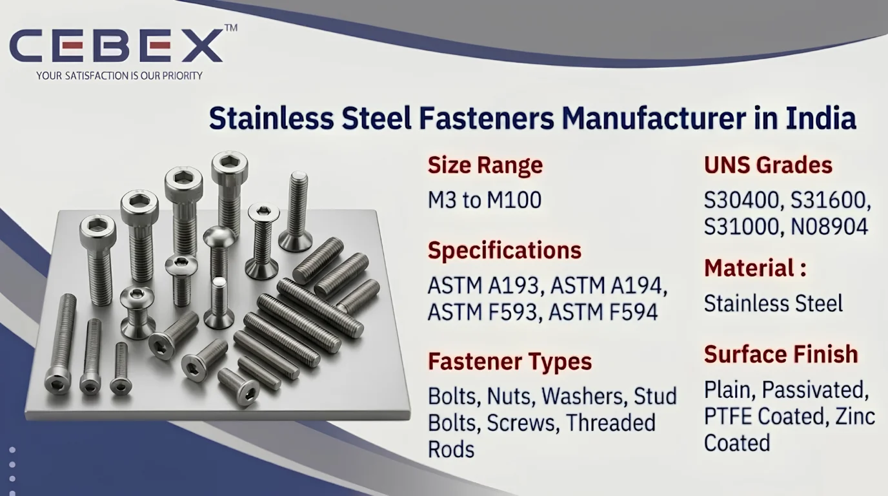

Leading Manufacturer & Exporter of SS Bolts, Nuts & Stud Bolts
Stainless Steel Fasteners are widely used in industrial, offshore, marine, petrochemical, power generation, pharmaceutical, food processing, infrastructure, and heavy engineering industries because of their excellent corrosion resistance, superior mechanical strength, high-temperature stability, and long operational life. As a leading Stainless Steel Fasteners Manufacturer in India, CEBEX STEEL INDIA manufactures and exports premium-quality stainless steel fastening solutions produced according to international ASTM, ASME, DIN, ISO, and EN standards for critical industrial applications.
Our Stainless Steel Fasteners are extensively utilized in pressure vessels, pipelines, structural assemblies, refinery systems, heat exchangers, marine equipment, offshore platforms, chemical processing plants, industrial machinery, and fabrication projects where reliable fastening performance and corrosion protection are essential. We manufacture stainless steel bolts, nuts, washers, stud bolts, threaded rods, machine screws, anchor bolts, socket head fasteners, and custom-engineered fastening components according to industrial project specifications and international engineering standards.
At CEBEX STEEL INDIA, we utilize advanced forging, threading, machining, heat treatment, and precision finishing technologies to manufacture stainless steel fasteners with excellent dimensional accuracy, superior thread quality, and dependable mechanical performance. Our products are trusted by EPC contractors, OEM manufacturers, engineering companies, fabrication industries, infrastructure developers, and industrial buyers across India, Africa, the Middle East, Europe, and Southeast Asia.

Selecting the right Stainless Steel Fasteners manufacturer is essential for ensuring structural integrity, corrosion resistance, load-bearing performance, and long-term operational reliability. CEBEX STEEL INDIA has established itself as a trusted Stainless Steel Fasteners Manufacturer in India through strong metallurgical expertise, strict quality control systems, and dependable worldwide export capabilities.
We maintain complete traceability from raw material procurement to finished fastener dispatch and provide all products with EN 10204 3.1/3.2 Mill Test Certificates, inspection reports, and export documentation. Our in-house quality department performs comprehensive inspection procedures including chemical analysis, tensile testing, hardness testing, PMI testing, thread inspection, dimensional verification, and coating inspection to ensure compliance with ASTM and customer project specifications.
Our export logistics team efficiently manages seaworthy packaging, export documentation, and international shipping for smooth global deliveries.
Our Stainless Steel Fasteners are manufactured using premium-quality stainless steel raw materials sourced from approved mills and processed through advanced manufacturing technologies to ensure superior corrosion resistance, durability, and mechanical strength.
| Feature | Specification / Detail |
|---|---|
| Standards | ASTM, ASME, DIN, ISO, EN |
| ASTM Specifications | ASTM A193, ASTM A194, ASTM F593, ASTM F594 |
| Stainless Steel Grades | 304, 304L, 316, 316L, 310, 310S, 321, 347, 410, 904L |
| UNS Grades | S30400, S30403, S31600, S31603, S31000, S31008, S32100, S34700, S41000, N08904 |
| Size Range | M3 to M100 |
| Length Range | Up to 5 Meter |
| Fastener Types | Bolts, Nuts, Washers, Stud Bolts, Screws, Threaded Rods |
| Thread Standards | Metric, UNC, UNF, BSW |
| Surface Finish | Plain, Passivated, PTFE Coated, Zinc Coated |
| Manufacturing Process | Forged, CNC Machined, Heat Treated |
| Documentation | EN 10204 3.1/3.2, MTC, Inspection Reports |
We manufacture a comprehensive range of Stainless Steel Fasteners suitable for industrial, structural, offshore, marine, and high-temperature applications. Our manufacturing range includes hex bolts, heavy hex bolts, hex nuts, stud bolts, threaded rods, socket head cap screws, anchor bolts, machine screws, eye bolts, U bolts, spring washers, lock nuts, countersunk screws, and foundation bolts.
In addition to standard industrial fasteners, we also manufacture custom stainless steel fastening components according to customer drawings, OEM specifications, and EPC project requirements. Custom threading, machining, coating, passivation, and heat treatment services are available according to application requirements.
Material selection plays a critical role in determining corrosion resistance, mechanical performance, temperature resistance, and service life. We manufacture Stainless Steel Fasteners in internationally approved grades suitable for highly demanding industrial operating environments.
| Stainless Steel Grade | UNS Number | Typical Applications | Standards |
|---|---|---|---|
| SS 304 | S30400 | General Industrial Applications | ASTM A193 |
| SS 304L | S30403 | Welding & Chemical Processing | ASTM A193 |
| SS 316 | S31600 | Marine & Offshore Applications | ASTM A193 |
| SS 316L | S31603 | Pressure Vessels & Process Industries | ASTM A193 |
| SS 310 | S31000 | High Temperature Applications | ASTM A193 |
| SS 310S | S31008 | Furnace & Thermal Systems | ASTM A193 |
| SS 321 | S32100 | Heat Exchangers & Aerospace | ASTM A193 |
| SS 347 | S34700 | Boiler & Pressure Equipment | ASTM A193 |
| SS 410 | S41000 | Turbine & Structural Components | ASTM A193 |
| SS 904L | N08904 | Acidic & Corrosive Environments | ASTM A193 |
All materials are sourced from reputed mills and supplied with complete traceability and inspection certification.
Every Stainless Steel Fastener supplied by CEBEX STEEL INDIA includes complete chemical composition and mechanical property reports to ensure compliance with international standards and industrial project specifications.
| Element | Composition (%) |
|---|---|
| Chromium (Cr) | 18.0 – 20.0 |
| Nickel (Ni) | 8.0 – 10.5 |
| Carbon (C) | 0.08 Max |
| Manganese (Mn) | 2.0 Max |
| Silicon (Si) | 1.0 Max |
| Iron (Fe) | Balance |
| Property | Value |
|---|---|
| Tensile Strength | 515 MPa Min |
| Yield Strength | 205 MPa Min |
| Elongation | 40% Min |
| Hardness | 92 HRB Max |
| Element | Composition (%) |
|---|---|
| Chromium (Cr) | 16.0 – 18.0 |
| Nickel (Ni) | 10.0 – 14.0 |
| Molybdenum (Mo) | 2.0 – 3.0 |
| Carbon (C) | 0.08 Max |
| Iron (Fe) | Balance |
| Property | Value |
|---|---|
| Tensile Strength | 515 MPa Min |
| Yield Strength | 205 MPa Min |
| Elongation | 40% Min |
| Hardness | 95 HRB Max |
Our quality department conducts spectrographic analysis, hardness testing, tensile testing, PMI testing, coating inspection, and thread dimensional verification using calibrated inspection equipment.
We manufacture Stainless Steel Fasteners according to internationally approved DIN, ISO, ASTM, and ASME standards to ensure interchangeability, dimensional precision, and industrial compatibility.
| Standard | Description |
|---|---|
| DIN 933 | Hex Head Bolts |
| DIN 931 | Partially Threaded Bolts |
| DIN 934 | Hex Nuts |
| DIN 975 / 976 | Threaded Rods |
| ISO 4014 / 4017 | Metric Hex Bolts |
| ASTM A193 | High Temperature Bolting |
| ASTM A194 | Industrial Nuts |
We manufacture fasteners in metric, UNC, UNF, and BSW threading systems with customized dimensions and machining according to customer specifications.
Stainless Steel Fasteners provide excellent resistance to atmospheric corrosion, moisture exposure, chemicals, seawater environments, and industrial operating conditions. Austenitic stainless steel grades such as 304 and 316 offer exceptional corrosion resistance and long-term reliability in chemical processing, offshore, marine, and industrial fabrication applications.
316 and 316L stainless steel fasteners provide improved chloride resistance because of their molybdenum content, making them suitable for seawater systems, offshore platforms, desalination plants, and highly corrosive industrial environments.
Our Stainless Steel Fasteners are extensively used in industries requiring corrosion resistance, structural reliability, and long operational life. Oil & gas industries utilize stainless steel fasteners for offshore structures, pipelines, pressure equipment, and refinery systems operating in corrosive environments.
Marine engineering industries use stainless steel bolts, nuts, and stud bolts for shipbuilding, seawater systems, offshore platforms, and marine structural applications because of their excellent chloride corrosion resistance. Stainless steel fasteners are also widely used in power plants, petrochemical industries, pharmaceutical plants, food processing systems, infrastructure projects, water treatment facilities, construction industries, and heavy engineering applications.
Quality assurance is one of the core strengths of our manufacturing and export operations. Every Stainless Steel Fastener undergoes strict inspection and testing procedures including dimensional inspection, chemical analysis, hardness testing, tensile testing, PMI testing, coating inspection, thread inspection, and visual inspection.
Our quality control department utilizes advanced inspection equipment including spectrometers, hardness testing machines, profile projectors, thread gauges, coating thickness meters, and dimensional measurement systems to ensure compliance with ASTM, ASME, DIN, ISO, and customer project requirements.
We supply all products with EN 10204 3.1 Mill Test Certificates, EN 10204 3.2 certification, NABL approved reports, third-party inspection reports, and complete raw material traceability documentation.
We understand the importance of secure packaging and timely delivery for industrial and export projects. Our Stainless Steel Fasteners are packed using export-grade boxes, wooden crates, HDPE bags, palletized packaging, and waterproof wrapping materials to ensure complete protection during transportation and storage.
Our export logistics department manages complete shipping documentation including commercial invoices, packing lists, certificates of origin, mill test certificates, inspection reports, and fumigation certificates for smooth customs clearance and worldwide shipping.
As a leading Stainless Steel Fasteners Manufacturer in India, we have built a strong reputation for supplying high-quality Stainless Steel Fasteners to major industrial and infrastructure projects across Africa. Our export team understands the unique requirements of African industries and ensures smooth, timely deliveries with complete documentation, inspection compliance, and international export support. From offshore engineering and petrochemical facilities to power plants, construction projects, and industrial infrastructure, our Stainless Steel Fasteners are trusted by clients in Nigeria, Egypt, Kenya, South Africa, Ethiopia, and beyond.
In addition to Stainless Steel Fasteners, we also manufacture and export Duplex Steel Fasteners, Super Duplex Fasteners, Inconel Fasteners, Hastelloy Fasteners, and Titanium Fasteners. These high-performance alloy fasteners deliver exceptional corrosion resistance, superior mechanical strength, outstanding high-temperature stability, and proven long-term reliability in the most aggressive industrial and marine environments.
Our technical team is ready to assist you in selecting the ideal grade, coating, thread type, and specification for your critical applications.
Browse our full range:
Clients choose CEBEX STEEL INDIA because of our strong technical expertise, strict quality control systems, competitive pricing, and dependable worldwide export capabilities. We provide flexible order quantities, fast production schedules, custom machining services, technical support, and project-based supply solutions for industrial and EPC projects.
Our engineering team assists clients in selecting the appropriate stainless steel fastener grades and specifications based on corrosion exposure, load requirements, temperature conditions, pressure ratings, and mechanical performance expectations.
SS 304 fasteners are widely used for general industrial and structural applications because of their excellent corrosion resistance and cost-effectiveness. SS 316 fasteners contain molybdenum, which provides superior resistance to chlorides, seawater, and corrosive chemicals, making them ideal for marine, offshore, and chemical processing industries.
SS 316 and SS 316L stainless steel fasteners are commonly recommended for marine and offshore applications due to their excellent resistance to seawater corrosion, chloride exposure, and harsh environmental conditions.
We manufacture a complete range of stainless steel fasteners including hex bolts, hex nuts, stud bolts, threaded rods, washers, anchor bolts, machine screws, socket head cap screws, eye bolts, U bolts, and custom-engineered fastening components according to international standards and customer drawings.
Yes, all stainless steel fasteners are supplied with EN 10204 3.1/3.2 Mill Test Certificates, inspection reports, chemical analysis reports, and third-party inspection documentation upon request.
Yes, stainless steel fasteners manufactured in grades such as SS 310, SS 310S, SS 321, and SS 347 offer excellent heat resistance and mechanical stability for high-temperature applications including furnaces, boilers, heat exchangers, and thermal processing systems.